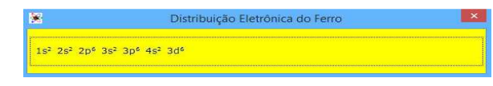

A Utilização de Recursos Computacionais em
Química no Ensino da Tabela Periódica
A UTILIZAÇÃO DE RECURSOS COMPUTACIONAIS EM
QUÍMICA NO ENSINO DA TABELA PERIÓDICA
Marcelo Pinheiro de SOUZA
mpds@oi.com.br
Instituto de Aplicação Fernando Rodrigues da Silveira/UERJ
Fábio MERÇON
mercon@uerj.br
Instituto de Química/UERJ
Resumo
Os recursos computacionais se fazem cada vez mais presentes no contexto escolar. Dentre
eles, destaca-se o
emprego de softwares. No presente trabalho é feita a apresentação do softwares Tabela
Periódica 2013, bem
como uma proposta didática para seu uso no estudo da tabela periódica em aulas de Química da educação
básica. O software foi desenvolvido para plataforma Windows com o objetivo de se ter uma
ferramenta
educacional atualizada que possibilita aos estudantes conhecerem a organização dos elementos, seus nomes,
propriedades e classificações, além de extraírem dados importantes para a aprendizagem de outros conceitos
fundamentais da Química. As atividades propostas procuram dinamizar a aula, com a participação ativa dos
alunos ao utilizarem o recurso. O trabalho realizado com o auxílio doi software possibilita a
construção do
conhecimento e a aprendizagem colaborativa, sendo importante o papel do professor como orientador e
mediador no uso do recurso computacional. A utilização do computador no ensino da Química é um importante
meio de se construir um ambiente de aprendizagem dinâmico e interativo, tornando o conteúdo mais
estimulante para os alunos.
Palavras-chave:
Ensino de Química - Software educacional - Tabela periódica.

Introdução
O emprego de recursos computacionais na escola vem crescendo ao longo dos últimos
anos. O computador permitiu a inserção de novos elementos no processo de ensin-
oaprendizagem. Assim, o professor passou a ter uma nova gama de ferramentas, tais como
softwares, páginas de Internet, aplicativos, redes sociais e blogs.
Esses recursos se disseminaram em todos os níveis do ensino, da Educação Básica ao
Introdução
O emprego de recursos computacionais na escola vem crescendo ao longo dos últimos
anos. O computador permitiu a inserção de novos elementos no processo de ensin-
oaprendizagem. Assim, o professor passou a ter uma nova gama de ferramentas, tais como
softwares, páginas de Internet, aplicativos, redes sociais e blogs.
Esses recursos se disseminaram em todos os níveis do ensino, da Educação Básica ao
Ensino Superior. Mais especificamente na Educação Básica, as diversas disciplinas pedagógicas
que compõe a grade curricular foram contempladas com novas ferramentas, que atendem as
especificidades de cada disciplina.
Nesse contexto, os recursos computacionais se fazem presentes no ensino de Química.
É sabido que o ensino dessa disciplina é alvo de diversas críticas por parte de professores,
alunos e pesquisadores. A maior parte das críticas decorre da necessidade de memorização de
fórmulas e equações e da capacidade de abstração para a visualização de modelos que
representam a estrutura de átomos e moléculas.
Em um estudo anterior sobre a aplicação de softwares educativos em turmas de
Química, verificou-se que sua inserção na prática pedagógica favorece a motivação dos alunos,
torna as aulas mais dinâmicas e agradáveis e contribui para o processo de construção do
conhecimento (Merçon et al., 2012).
Um dos itens do conteúdo programático que é alvo das críticas é o estudo da tabela de
classificação periódica dos elementos químicos. A tabela, que foi concebida para ser fonte de
consulta e informações, muitas vezes é vista pelos alunos como algo incompreensível, de difícil
interpretação e até, como um conjunto de informações que deve ser memorizado.
O objetivo principal do presente trabalho é apresentar uma proposta didática do
estudo da tabela periódica mediado pelo uso de um software educacional. Esse trabalho busca
demonstrar que é possível integrar a abordagem de conteúdos e o uso do computador no
ensino de Química de nível fundamental e médio, bastando apenas que o professor tenha uma
preparação adequada para selecionar, planejar e aplicar softwares educacionais em seu
trabalho pedagógico.
1. O Uso do Computador na Escola
O uso das tecnologias de informação e comunicação nas escolas tem sido importante
na formação dos alunos no que diz respeito à construção do conhecimento. Infelizmente,
ainda há profissionais do ensino que julgam eficientes apenas as aulas tradicionais. A eficiência
do computador no processo educacional provém de sua aplicação como uma ferramenta de
apoio e que dinamize o aprendizado das áreas e componentes curriculares.
Muitos pesquisadores entendem que o computador deve ser visto como mais um
recurso didático à disposição do professor, ou seja, um meio facilitador dos processos de
ensino, comunicação e aprendizagem. Porém, entende-se que a tecnologia não pode ser
utilizada apenas dessa forma, mas também como uma ferramenta importante que colabore
com as atividades pedagógicas.
Brito (2001) observou que os recursos computacionais podem ampliar o conceito de
aula, propiciando a criação de novas pontes cognitivas. Além disto, em um ambiente
1. O USO DO COMPUTADOR NA ESCOLA
O uso das tecnologias de informação e comunicação nas escolas tem sido importante
na formação dos alunos no que diz respeito à construção do conhecimento. Infelizmente,
ainda há profissionais do ensino que julgam eficientes apenas as aulas tradicionais. A eficiência
do computador no processo educacional provém de sua aplicação como uma ferramenta de
apoio e que dinamize o aprendizado das áreas e componentes curriculares.
Muitos pesquisadores entendem que o computador deve ser visto como mais um
recurso didático à disposição do professor, ou seja, um meio facilitador dos processos de
ensino, comunicação e aprendizagem. Porém, entende-se que a tecnologia não pode ser
utilizada apenas dessa forma, mas também como uma ferramenta importante que colabore
com as atividades pedagógicas.
Brito (2001) observou que os recursos computacionais podem ampliar o conceito de
aula, propiciando a criação de novas pontes cognitivas. Além disto, em um ambiente
multimídia, a integração de diferentes metodologias pode proporcionar uma aprendizagem
mais dinâmica e agradável, com grande potencial para uma aprendizagem significativa.
Segundo Araújo (2005), a velocidade com que o mundo vem se desenvolvendo tem
exigido cada vez mais uma boa formação em ciência e tecnologia. Diante de todo avanço
tecnológico, que tanto atrai os jovens, a utilização de recursos audiovisuais como motivadores
do ensino básico é importante. Além das atividades em laboratório, os jogos, softwares,
Internet, multimídia, vídeos, entre outros recursos, são ferramentas que conseguem motivar
os alunos, acarretando um aprendizado mais interessante e eficiente.
Esses recursos permitem que os alunos criem suas próprias soluções, pensem e
reflitam sobre o conteúdo estudado. São ótimas fontes de informação e estimulam o processo
ensino-aprendizagem, pois possibilitam o desenvolvimento integral do aluno, valorizando o
seu lado social, emocional, crítico e criativo.
As tecnologias de comunicação e informação servem para explorar novas
possibilidades pedagógicas, contribuem para uma melhoria do trabalho do professor em sala
de aula e valorizam o aluno como participante ativo das atividades escolares.
2. Recursos Computacionais no Ensino de Química
Considerando o ensino de Química, o uso de computador tem sido importante para a
2. RECURSOS COMPUTACIONAIS NO ENSINO DE QUÍMICA
Considerando o ensino de Química, o uso de computador tem sido importante para a
contextualização entre teoria e prática. Dallacosta et al. (1998) constataram que os recursos
computacionais atraem e motivam os estudantes, aumentam a capacidade de compreensão,
favorecem a visualização de conteúdos abstratos e de reações químicas perigosas e seu uso
pode ser estendido ao laboratório. Contudo, o computador não deve ser utilizado para
substituir atividades experimentais, pois existem habilidades e procedimentos do trabalho
científico que só podem ser proporcionadas pelo trabalho prático.
Michel et ali. (2004), baseando-se em uma revisão de softwares e sites educacionais de
Química, concluíram sobre a importância dos recursos de informática como ferramentas de
ensino, visando uma integração na qual a tecnologia deve se adequar à abordagem
educacional. Segundo as autoras, as ferramentas da informática podem contribuir no
processo de construção do conhecimento e que cabe aos professores incorporá-las como
recurso em sua prática docente.
Eichler e Del Pino (2000) citam que o software utilizado no processo educativo deve
ser adequado aos objetivos do professor e às características dos estudantes, possibilitando
várias possibilidades de aprendizagem. É fundamental que o software se integre ao currículo e
com as atividades de sala de aula, pois esse recurso não consegue construir conhecimento
sozinho.
Portanto, cabe ao professor analisar qual software utilizar para satisfazer as
necessidades do local em que deseja realizar a atividade, considerando o nível de aprendizado
e a realidade de seus alunos.
É necessário que, para a utilização dos software educacionais, o professor planeje
todas as etapas necessárias ao uso desse recurso pedagógico, conhecendo o software, todas
as suas funções e os objetivos que se pretende atingir.
Essa linha de pensamento se faz presente na análise de outros pesquisadores, que
destacam a importância do professor no planejamento e desenvolvimento de estratégias
didáticas que contemplem o software em sua prática docente, propiciando maior liberdade
para o processo de construção do conhecimento (Merçon et al., 2012).
O uso de recursos computacionais é um tema recorrente em pesquisas recentes
envolvendo o ensino de Química. Esses estudos envolvem tanto o emprego de softwares
educacionais como proposta para o desenvolvimento de um determinado conteúdo
programático (Benite, 2011 e Oliveira, 2013) como a inserção de novos recursos
computacionais, como blogs (Barro et al., 2014), e-mails (Milaré, 2014).
Num sistema educacional que utiliza os recursos da informática, o professor trabalha
mais próximo ao aluno, promovendo uma aprendizagem mais agradável e produtiva. Cabe ao
professor incentivar o aluno a buscar informações em diferentes fontes, orientá-lo nessa
pesquisa, fornecer condições básicas para que ele encontre respostas e construa
conhecimento. Para isso, o professor precisa dominar os recursos computacionais, planejar
atividades de trabalho com esses recursos, selecionar os mais adequados aos objetivos
pedagógicos. Dessa forma, transforma-se uma educação centrada no ensino e na transmissão
da informação, para uma educação em que o estudante realiza atividades com o auxílio do
computador. O aluno deixa de ser passivo, passando a participar ativamente de seu
aprendizado, de sua construção de conhecimento.
Segundo Ponte et al. (2003), as tecnologias de informação e comunicação podem
colaborar com o professor no planejamento de situações de aprendizagem estimulantes,
favorecendo, ainda, a diversificação das possibilidades de aprendizagem. Contudo, faz-se
necessária uma formação adequada para que o professor possa utilizar essas tecnologias como
recurso pedagógico.
Assim, o trabalho com informática na educação torna importante a formação do
professor nessa área, de forma que ele possa desenvolver técnicas de integrar o computador
ao processo ensino-aprendizagem.
A partir da análise de dados da literatura científica, Eichler e Del Pino (2000) concluem
que uma das maiores dificuldades existentes na informática educativa é a falta de preparação
dos professores para aproveitar os computadores como recurso educacional.
3. Proposta de Aula Utilizando o Software Tabela Periódica 2013
Desenvolveu-se o software Tabela Periódica 2013 (Souza, 2013) para a plataforma
3. PROPOSTA DE AULA UTILIZANDO O SOFTWARE TABELA PERIÓDICA 2013
Desenvolveu-se o software Tabela Periódica 2013 (Souza, 2013) para a plataforma
Windows, podendo ser utilizado em turmas de nono ano do ensino fundamental ou de
primeira série do ensino médio, após a abordagem dos conceitos principais em sala de aula
e/ou como uma ferramenta auxiliar na introdução deste tópico do programa de Química. A
aula com este software possibilita fixar os conceitos, construir novos conhecimentos e discutir
a importância dos principais elementos químicos em nosso cotidiano.
O software foi produzido com o objetivo de se ter uma ferramenta atualizada para o
uso em sala de aula e em laboratório de informática, já que não encontramos um software de
tabela periódica em português adequado às nossas necessidades de trabalho com alunos de
ensino básico. A vantagem de o professor produzir seu próprio software é poder rapidamente
modificar dados conforme novas atualizações divulgadas pela comunidade científica.
A tela inicial do software (Figura 1) apresenta a tabela periódica atual colorida segundo
a classificação dos elementos quanto as suas propriedades físicas e químicas. Tal classificação
agrupa os elementos em hidrogênio, metais, ametais e gases nobres, não apresentando mais
a
antiga classificação denominada semi-metais. Esta tabela possui 118 elementos, porém os
elementos de números atômicos 113, 115, 117 e 118 ainda não receberam nomes oficiais da
IUPAC.
Figura 1 – Classificação dos elementos quanto às propriedades físicas e químicas.
A clicar sobre um determinado elemento, abre-se uma pequena janela (Figura 2) com
A clicar sobre um determinado elemento, abre-se uma pequena janela (Figura 2) com
informações sobre o mesmo. Nesta janela podem ser encontrados os dados: nome do
elemento, número atômico, massa atômica, eletronegatividade, raio atômico, estado físico a
298 K.

Figura 2 – Informações sobre o elemento químico ferro.
A seta no canto inferior direito permite o acesso à distribuição eletrônica em subníveis
A seta no canto inferior direito permite o acesso à distribuição eletrônica em subníveis
do elemento considerado (Figura 3). No desenvolvimento do software seguiu-se a distribuição
eletrônica dos elementos segundo a regra idealizada por Pauling. Apesar de existirem algumas
exceções a esta regra, ela é comumente utilizada na educação básica.

Figura 3 – Distribuição eletrônica em subníveis do elemento químico ferro.
Para se consultar a tabela de classificação dos elementos segundo a ordem crescente
Figura 3 – Distribuição eletrônica em subníveis do elemento químico ferro.
Para se consultar a tabela de classificação dos elementos segundo a ordem crescente
de energia dos subníveis, basta clicar no ícone no canto inferior esquerdo da tabela com o
título “classificação por subníveis”, o que faz aparecer a tela da Figura 4.
O trabalho que pode ser realizado com o software desenvolvido é o seguinte:
inicialmente o professor faz um breve histórico sobre a evolução da tabela periódica até
chegar à versão atual. O professor distribui para cada aluno, uma folha contendo a imagem
não colorida da tabela periódica atual, outra folha com a mesma imagem e por fim uma
terceira folha com a tabela periódica vazia, sem nenhum símbolo escrito (Figura 5).
Inicialmente, o professor utiliza o software de forma demonstrativa, projetando-o em uma
tela. Explica a forma de organização da tabela, identifica períodos, famílias, associa o período
de um elemento ao seu número de camadas eletrônicas, informa que elementos de uma
mesma família tem propriedades químicas semelhantes, discute elementos naturais e a
produção de novos elementos.
Depois, ele apresenta as classificações dos elementos quanto às propriedades físicas e
químicas (detalhando essas propriedades) e quanto ao subnível de maior energia. Os alunos
utilizam as duas primeiras tabelas recebidas para colorir as regiões correspondentes a essas
classificações.
Os estudantes preenchem a tabela da terceira folha (Figura 5) com o subnível de maior
energia de cada elemento conforme as orientações do professor, justificando a classificação
apresentada na Figura 4.

Figura 4 – Classificação dos elementos quanto ao subnível de maior energia.

Figura 5 – Tabela periódica sem os símbolos dos elementos.
Por fim, o professor apresenta as famílias que possuem nomes especiais (metais
Por fim, o professor apresenta as famílias que possuem nomes especiais (metais
alcalinos, alcalino terrosos, calcogênios, halogênios e gases nobres).
É importante os alunos receberem uma tabela periódica que contenha os nomes dos
elementos, pois não faz sentido obrigá-los a conhecer, em curto espaço de tempo, a
nomenclatura e os símbolos de uma quantidade enorme de elementos químicos. Essa pode ser
ainda a didática utilizada por muitos professores e é mais um motivo para que a Química seja
considerada a disciplina das “decorebas” e consequentemente odiada pelos alunos. É
importante que eles conheçam pelo menos os nomes e símbolos dos elementos principais,
mas este aprendizado deve se dar gradualmente durante a vida escolar e não em apenas um
bimestre letivo. O fato de os alunos consultarem a tabela periódica e utilizarem estes
elementos por várias vezes no curso de Química de ensino básico é percebido como uma
metodologia mais agradável e eficiente de se absorver estas informações.
Muitos educadores defendem um ensino de Química motivador, contextualizado,
voltado para o cotidiano do aluno, sem memorizações, então as tabelas periódicas dos
vestibulares, sem os nomes dos elementos, parecem inconsistentes com esses pensamentos.
Após este trabalho teórico, os alunos iniciam as atividades com o software. Eles são divididos
em duplas e recebem um roteiro de atividades pedagogicamente direcionado para a fixação
do conteúdo já trabalhado e para a construção de novos conhecimentos.
A primeira página do roteiro de atividade pode conter perguntas, cujas respostas
devem ser pesquisadas na tabela periódica. As perguntas sugeridas são: 1. Apresente os
símbolos dos metais alcalinos. 2. Apresente os símbolos dos metais alcalino terrosos. 3.
Apresente os símbolos dos calcogênios. 4. Apresente os símbolos dos halogênios. 5. Qual é a
família e o período do urânio? 6. Apresente o símbolo de um metal representativo, do bloco p
e do terceiro período. 7. Apresente o símbolo do elemento de transição externa de maior
número atômico. 8. Apresente o símbolo de um elemento que tenha propriedades químicas
semelhantes às do oxigênio.
Na outra página, há duas atividades envolvendo propriedades periódicas. O professor
introduz a parte conceitual, explicando o significado de raio atômico (RA) e eletronegatividade
(En). A seguir, os alunos consultam o software Tabela Periódica 2013 e selecionam dados
destas propriedades de elementos do segundo e terceiro períodos da tabela periódica. Esses
dados são utilizados para se completar manualmente dois gráficos, um para cada propriedade
(Figura 6). No eixo das abscissas, estão os números atômicos dos elementos em ordem
crescente e no eixo das ordenadas a respectiva propriedade. A análise das variações ocorridas
nestes gráficos leva os alunos a concluírem sobre o comportamento do raio atômico e da
eletronegatividade nas famílias e períodos da tabela periódica.
Figura 6 - Gráficos a serem preenchidos com dados: (a) de raio atômico no 2º e 3º períodos da
tabela periódica (b) de eletronegatividade no 2º e 3º períodos da tabela periódica.
Esta atividade, então, consiste em retirar informações da tabela e desenvolver
conclusões a respeito da organização e propriedades dos principais elementos. Este trabalho é
bastante motivador, pois os alunos praticam a construção e interpretação de gráficos,
reconhecendo a importância da sua compreensão na construção do conhecimento científico.
Por fim, o professor mostra que a partir destas propriedades podemos compreender as
tendências que os átomos possuem em se transformar em cátions e ânions e, com a união
destas espécies, são formadas estruturas que dão origem a certas substâncias. Algumas
fórmulas de compostos iônicos podem ser montadas pelos alunos com a mediação do
professor, antecipando alguns conceitos estudados em ligações químicas. Com isso, os alunos
começam a perceber que fenômenos macroscópicos estão intimamente relacionados às
propriedades do mundo microscópico.
4. conclusões
O software Tabela Periódica 2013 foi desenvolvido com o objetivo de ser uma
ferramenta atualizada e alternativa para o ensino de um tópico fundamental da Química na
educação básica. As atividades realizadas com o auxílio do software possibilitam a construção
do conhecimento e a aprendizagem colaborativa, sendo importante o papel do professor
como orientador e mediador no uso do software.
Muitos dos softwares similares disponíveis na Internet e no mercado não se mostram
adequados para o trabalho na educação básica, por não estarem atualizados e não trazerem
informações adequadas às atividades propostas neste trabalho. Então, foi produzido um
software de forma a atender nossos objetivos e com a vantagem de poder sofrer modificações
a qualquer momento em caso de atualizações divulgadas pela comunidade científica.
Figura 6 - Gráficos a serem preenchidos com dados: (a) de raio atômico no 2º e 3º períodos da
tabela periódica (b) de eletronegatividade no 2º e 3º períodos da tabela periódica.
Esta atividade, então, consiste em retirar informações da tabela e desenvolver
conclusões a respeito da organização e propriedades dos principais elementos. Este trabalho é
bastante motivador, pois os alunos praticam a construção e interpretação de gráficos,
reconhecendo a importância da sua compreensão na construção do conhecimento científico.
Por fim, o professor mostra que a partir destas propriedades podemos compreender as
tendências que os átomos possuem em se transformar em cátions e ânions e, com a união
destas espécies, são formadas estruturas que dão origem a certas substâncias. Algumas
fórmulas de compostos iônicos podem ser montadas pelos alunos com a mediação do
professor, antecipando alguns conceitos estudados em ligações químicas. Com isso, os alunos
começam a perceber que fenômenos macroscópicos estão intimamente relacionados às
propriedades do mundo microscópico.
4. CONCLUSÕES
O software Tabela Periódica 2013 foi desenvolvido com o objetivo de ser uma
ferramenta atualizada e alternativa para o ensino de um tópico fundamental da Química na
educação básica. As atividades realizadas com o auxílio do software possibilitam a construção
do conhecimento e a aprendizagem colaborativa, sendo importante o papel do professor
como orientador e mediador no uso do software.
Muitos dos softwares similares disponíveis na Internet e no mercado não se mostram
adequados para o trabalho na educação básica, por não estarem atualizados e não trazerem
informações adequadas às atividades propostas neste trabalho. Então, foi produzido um
software de forma a atender nossos objetivos e com a vantagem de poder sofrer modificações
a qualquer momento em caso de atualizações divulgadas pela comunidade científica.

O conhecimento de programação por parte de um profissional de educação deve ser
cada vez mais valorizado, pois favorece o desenvolvimento de um software útil, adequado e
eficiente à proposta de ensino do professor.
A substituição da tradicional aula de tabela periódica por outra que utiliza recursos
computacionais possibilita um maior interesse dos alunos pelo aprendizado dos conceitos
envolvidos. A utilização do computador no ensino da Química é um importante meio de se
construir um ambiente de aprendizagem dinâmico e interativo, tornando o conteúdo mais
estimulante para os alunos.
Referências Bibliográficas
ARAÚJO, S. B. N. Análise de Softwares Educacionais Aplicados ao Ensino de Química.
Monografia Final (Graduação) – Instituto de Química - Universidade do Estado do Rio de
Janeiro, 2005, 59 p.
BARRO, M. R., BAFFA, A., QUEIROZ S. L. Blogs na Formação Inicial de Professores de Química.
Química Nova na Escola, n. 36, v. 1, p. 4 - 10, 2014.
BENITE, A. M. C., BENITE, C. R. M., SILVA FILHO, S. M. Cibercultura em Ensino de Química:
Elaboração de um Objeto Virtual de Aprendizagem para o Ensino de Modelos Atômicos.
Química Nova na Escola, n. 33, v. 2, p. 71 - 76, 2011.
BRITO, S. L. Um ambiente multimediatizado para a construção do conhecimento em química.
Química Nova na Escola, n. 14, p. 13 - 15, 2001.
DALLACOSTA, A., FERNANDES, A. M. R., BASTOS, R. C. Desenvolvimento de um Software
Educacional para o Ensino de Química Relativo à Tabela Periódica, IV Congresso RIBIE, Brasília
1998.
EICHLER, M. L., DEL PINO, J. C. Computadores em Educação Química: Estrutura Atômica e
Tabela Periódica, Química Nova, v. 23, n. 6, p. 835 - 840, 2000.
MERÇON, F., SOUZA, M. P., VALADARES, C. M. S., PEREIRA, J. A. S., SILVA, J. A., OLIVEIRA, R. E.
C. Estratégias Didáticas no Ensino de Química, E-Mosaicos – Revista Multidicisciplinar de
Ensino, Pesquisa, Extensão e Cultura do Instituto de Aplicação Fernando Rodrigues da Silveira
(CAp – UERJ), v. 1, n. 1, p. 79 – 93, 2012.
MICHEL, R., SANTOS, F. M. T., GRECA, I. M. R. Uma busca na Internet por ferramentas pra a
educação química no ensino médio. Química Nova na Escola, n. 10, p. 3-7, 2004.
MILARÉ, T. A Proposta Metodológica de Ilha Interdisciplinar de Racionalidade em um Curso de
Licenciatura em Química: Discutindo Informações de Corrente de E-mail. Química Nova na
Escola, n. 36, v. 2, p. 126 - 134, 2014.
OLIVEIRA, S. F., MELO, N. F., SILVA, J. T., VASCONCELOS, E. A. Softwares de Simulação no
Ensino de Atomística: Experiências Computacionais para Evidenciar Micromundos. Química
Nova na Escola, n. 35, v. 3, p. 147 - 151, 2013.
REFERÊNCIAS BIBLIOGRÁFICAS
ARAÚJO, S. B. N. Análise de Softwares Educacionais Aplicados ao Ensino de Química.
Monografia Final (Graduação) – Instituto de Química - Universidade do Estado do Rio de
Janeiro, 2005, 59 p.
BARRO, M. R., BAFFA, A., QUEIROZ S. L. Blogs na Formação Inicial de Professores de Química.
Química Nova na Escola, n. 36, v. 1, p. 4 - 10, 2014.
BENITE, A. M. C., BENITE, C. R. M., SILVA FILHO, S. M. Cibercultura em Ensino de Química:
Elaboração de um Objeto Virtual de Aprendizagem para o Ensino de Modelos Atômicos.
Química Nova na Escola, n. 33, v. 2, p. 71 - 76, 2011.
BRITO, S. L. Um ambiente multimediatizado para a construção do conhecimento em química.
Química Nova na Escola, n. 14, p. 13 - 15, 2001.
DALLACOSTA, A., FERNANDES, A. M. R., BASTOS, R. C. Desenvolvimento de um Software
Educacional para o Ensino de Química Relativo à Tabela Periódica, IV Congresso RIBIE, Brasília
1998.
EICHLER, M. L., DEL PINO, J. C. Computadores em Educação Química: Estrutura Atômica e
Tabela Periódica, Química Nova, v. 23, n. 6, p. 835 - 840, 2000.
MERÇON, F., SOUZA, M. P., VALADARES, C. M. S., PEREIRA, J. A. S., SILVA, J. A., OLIVEIRA, R. E.
C. Estratégias Didáticas no Ensino de Química, E-Mosaicos – Revista Multidicisciplinar de
Ensino, Pesquisa, Extensão e Cultura do Instituto de Aplicação Fernando Rodrigues da Silveira
(CAp – UERJ), v. 1, n. 1, p. 79 – 93, 2012.
MICHEL, R., SANTOS, F. M. T., GRECA, I. M. R. Uma busca na Internet por ferramentas pra a
educação química no ensino médio. Química Nova na Escola, n. 10, p. 3-7, 2004.
MILARÉ, T. A Proposta Metodológica de Ilha Interdisciplinar de Racionalidade em um Curso de
Licenciatura em Química: Discutindo Informações de Corrente de E-mail. Química Nova na
Escola, n. 36, v. 2, p. 126 - 134, 2014.
OLIVEIRA, S. F., MELO, N. F., SILVA, J. T., VASCONCELOS, E. A. Softwares de Simulação no
Ensino de Atomística: Experiências Computacionais para Evidenciar Micromundos. Química
Nova na Escola, n. 35, v. 3, p. 147 - 151, 2013.
PONTE, J. P., OLIVEIRA, H., VARANDAS, J. M. O contributo das tecnologias de informação e
comunicação para o desenvolvimento do conhecimento e da identidade profissional. In:
FIORENTINI, D. (Org.) Formação de Professores de Matemática: Explorando novos caminhos
com outros olhares. p. 159 -192. Campinas: Mercado de Letras, 2003.
SOUZA, M. P. Tabela Periódica 2013[CD]. Versão 1.0 para Windows. Rio de Janeiro: Marcelo
Pinheiro de Souza, 2013.